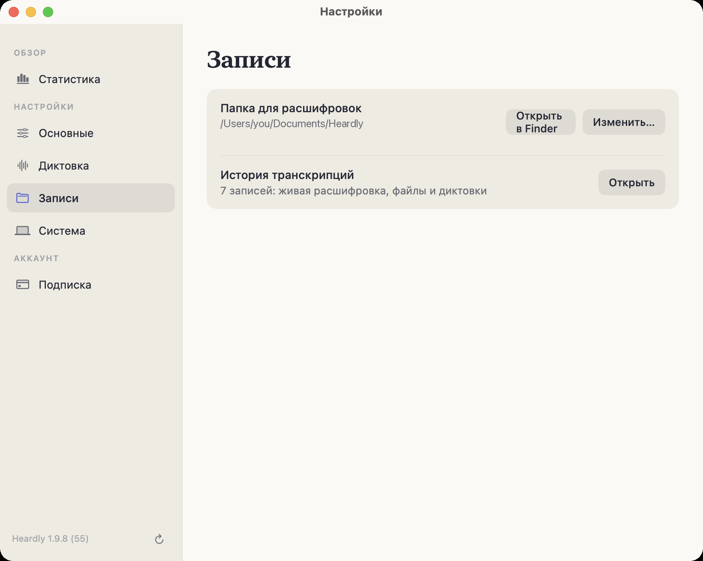
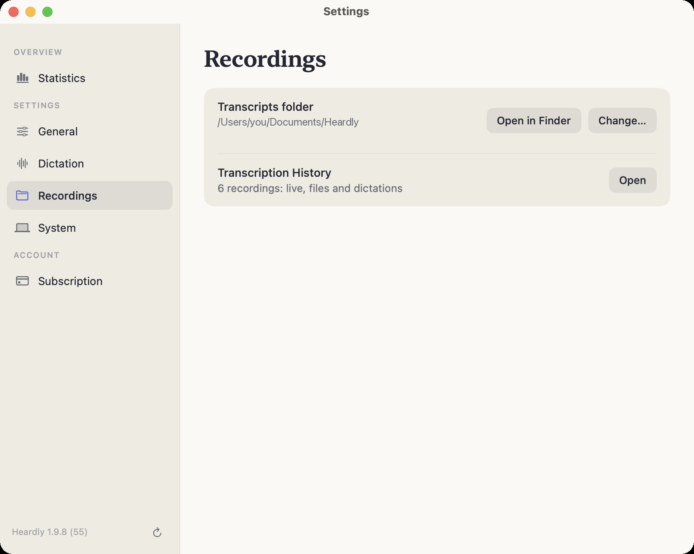

Папка расшифровокTranscripts folder
Heardly не прячет записи в свою базу: каждая расшифровка — текстовый файл в обычной папке, которую вы можете открыть, перенести в облако или положить под резервное копирование.Heardly does not hide your recordings in a database: every transcript is a text file in an ordinary folder you can open, move into a cloud drive or put under backup.
Где онаWhere it is
По умолчанию — ~/Documents/Heardly. Путь виден в Настройках → Записи, там же кнопки «Открыть в Finder» и «Изменить…».
By default, ~/Documents/Heardly. The path is shown in Settings → Recordings, together with the “Open in Finder” and “Change…” buttons.


Что внутриWhat is inside
Один файл .txt на запись, имя файла — название записи. Внутри обычный текст; у звонков и файлов в начале строки стоит время, у звонков ещё и подпись источника:
[00:04] [Я] Коллеги, собрались по редизайну лендинга.
[00:12] [Компьютер] Я вчера посмотрел метрики.Рядом лежит служебный файл .heardly-index.json — он помнит, к какому разделу Истории относится запись. Удалять его не стоит, но и ничего ценного в нём нет.
One .txt file per entry, named after the entry. Inside is plain text; calls and files start each line with a time, and calls add the source label:
[00:04] [Me] Right, we’re here about the landing page redesign.
[00:12] [Computer] I looked at the metrics yesterday.Alongside them sits a housekeeping file, .heardly-index.json, which remembers which History section an entry belongs to. Don’t delete it, but there is nothing valuable in it either.
Перенести папкуMoving the folder
Кнопка «Изменить…» в настройках переносит расшифровки в новое место вместе со служебным файлом. Папку можно положить в iCloud Drive или в другое облако — тогда записи будут доступны на других ваших компьютерах, но имейте в виду: это уже синхронизация облаком, а не Heardly, и текст встреч уедет на чужие серверы.
The “Change…” button in Settings moves the transcripts to a new place together with the housekeeping file. You can put the folder in iCloud Drive or another cloud, and the entries will be available on your other computers — but note that this is the cloud syncing them, not Heardly, and the text of your meetings will travel to someone else’s servers.
Переименовали файл, подправили текст, удалили лишнее — История увидит это сама, перезапускать Heardly не нужно.Rename a file, fix the text, delete what you don’t need — History notices by itself, with no need to restart Heardly.